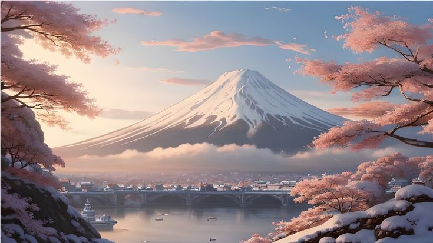
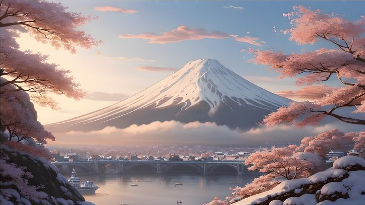

Découvrez le Colisée, le Mont Fuji et la Tour Eiffel avec VPTours, votre agence touristique de confiance. Ces monuments ont été sélectionnés pour leur richesse historique, leur importance culturelle et leur capacité à émerveiller les voyageurs. Nous vous emmenons explorer ces merveilles emblématiques qui incarnent le patrimoine universel et offrent une expérience unique à chaque visiteur. Avec VPTours, chaque destination devient une aventure inoubliable ! 🌍✨